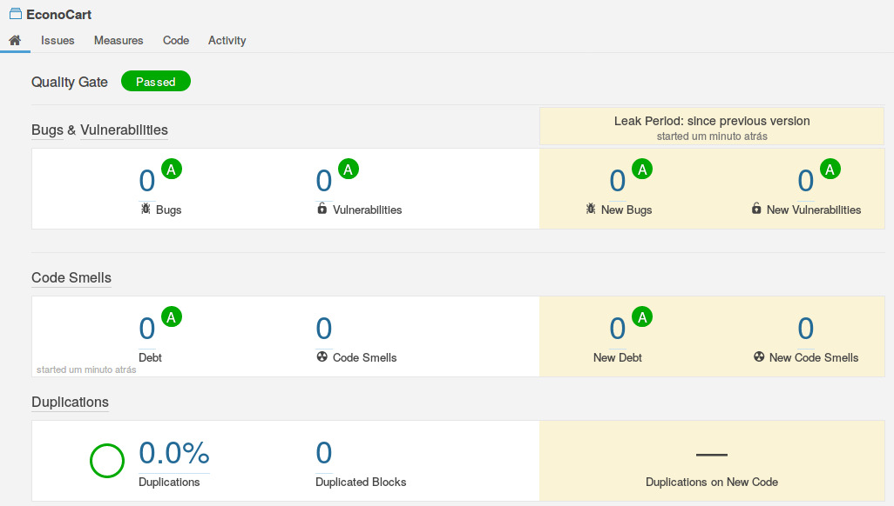

Caramba, mais um post meu Deus, e esse é sobre algo que eu particularmente tive vários problemas, eu nunca consegui de medir meu código principalmente porque no começo eu fazia código voltados para resolver problemas e não pensando na melhor forma de codificar, essa é uma historia triste de como eu codificada.
Em nosso trabalho de LES escolhemos o Ionic uma framework que passo a gostar cada vez mais e odiar também, como o ionic 2 é codificado em typescript é preciso fazer um pequeno ajuste no SonarQube para o mesmo reconhecer o typescript, então aqui vai o resultado.

Minha Opinião
Paulo, você deve estar olhando e se perguntando se esse é mesmo um código que eu ajudei a codificar e a resposta é sim, pode parecer que não mas ajudei em cada arquivo desse código, procurar resolver o problema sem aliar a uma métrica é basicamente construir um prédio sem se preocupar com o que se vai fazer dentro do prédio, eu entendi que um código que resolver um problema nem sempre vai ser o código que vai possibilitar a construir outra aplicação em cima dele, por isso medir é essencial para te guiar sobre o caminho da luz.
Resumo da Opera
O meu grupo estabeleceu alguns pontos de métricas :
- (Bugs < 10 )
- (Vulnerabilidades < 10)
- (Code Smells < 10)
- (Duplicidade de código < 2.5%)
- (Cobertura por Testes < 90%)